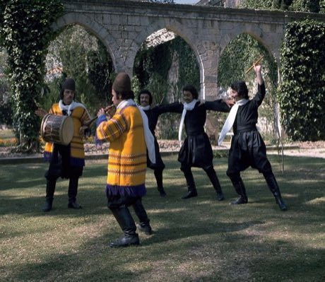

Home / Living Traditions / Mesopotamia, Levant and Arabia
Playable heritage gameDabke line dance
Also known as Dabke · Dabka
Dabke is a line dance of the Levant. Dancers link hands or arms and move along together behind a leader, driving the floor with strong stamps of the feet in time with a hand drum and a reed pipe.

How to play
- Four step lanes show the left foot, the right foot, a strong stomp and a crossing step.
- Each mark that falls onto the line at the bottom is one step of the leader's pattern: make it as it arrives.
- Every song is one phrase of the dance, played twice: learn it on the first round and make it crisp on the second.
Rules at a glance
- The dance counts two beats to the bar and the pulse never changes.
- Three phrases are included: three strong right-foot stomps after a run of alternating steps, a six-measure phrase with a crossing step, and a quick open-circle phrase with half-beat steps.
- A step on the beat scores in full, a step close to it scores less, and an extra step costs a little.
About the tradition
Dabke takes its name from the Arabic word for stamping. It is danced in lines and half circles across the Levant at weddings, family gatherings and festivals, and each village and region keeps its own steps, led by the dancer at the head of the line.
Origins
A living tradition passed from person to person; it is not tied to a single dated origin. It belongs to the cultural world of Mesopotamia, Levant and Arabia.
Credits
- Step patterns: World Heritage Games (original teaching patterns)
- Photo: Lebanon Ministry of Tourism, CC0, source on Wikimedia Commons
- Text: CC BY-SA 4.0, World Heritage Games.
Sources

Get the app
Dabke line dance is one of 10 instruments and dances in the Music & Dance of the World app for iPhone, iPad and Android. Submitted to the App Store and Google Play; in review. Store links appear here the day it goes live. One app, many traditions, no account needed.
More games to play


More from Lebanon

Buzuq Long-Neck Lute
Lebanon +2 · Musical instrumentsPlay preview · in the String Music of the World app

Mijwiz Double Clarinet
Lebanon +3 · Musical instrumentsPlay preview · in the Music & Dance of the World app
Phoenician Alphabet Trader
Lebanon · Puzzles and mind games

Tatreez Palestinian Cross-Stitch
Palestine +1 · Crafts and makingPlay preview · in the Textile Crafts of the World app